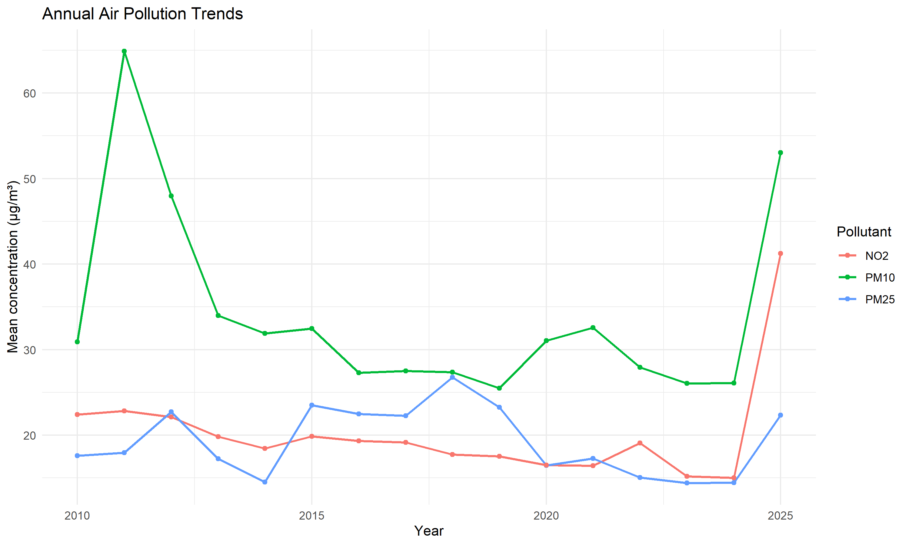
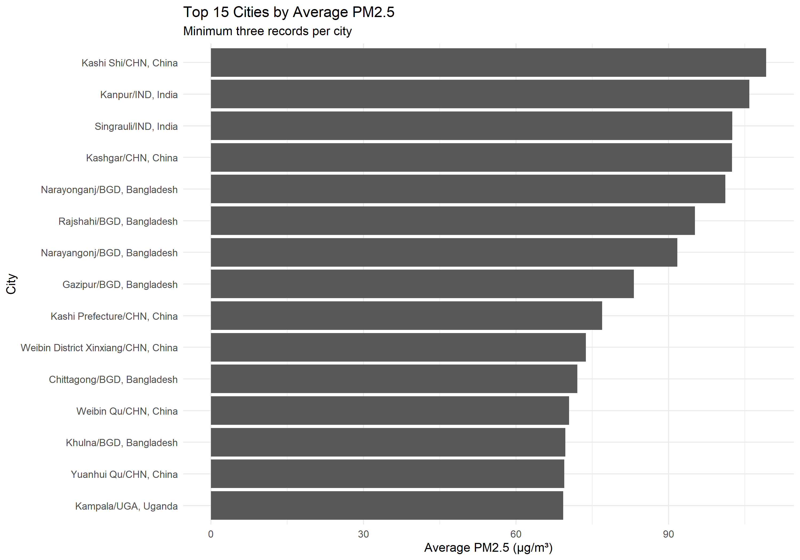
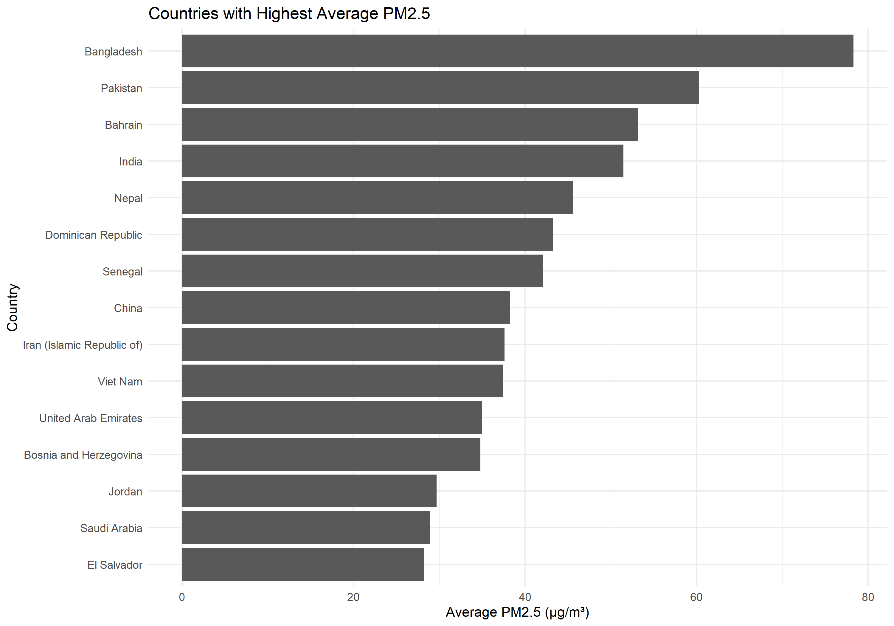
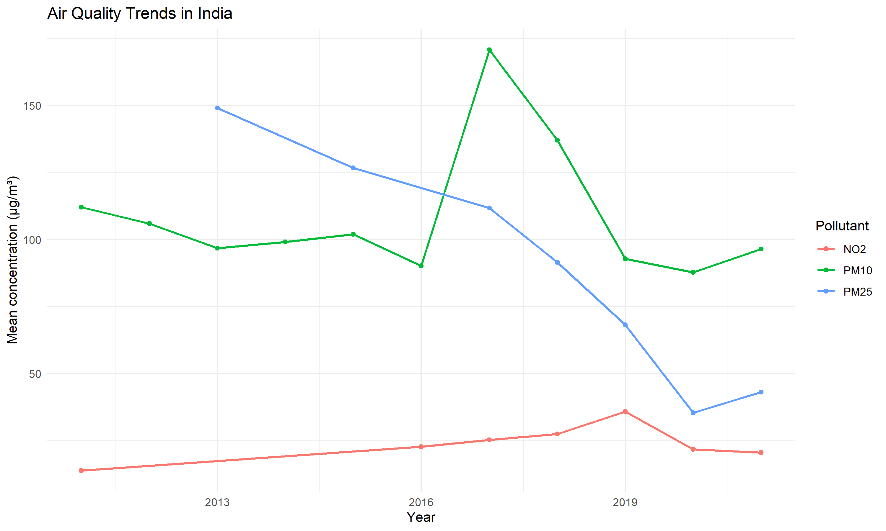
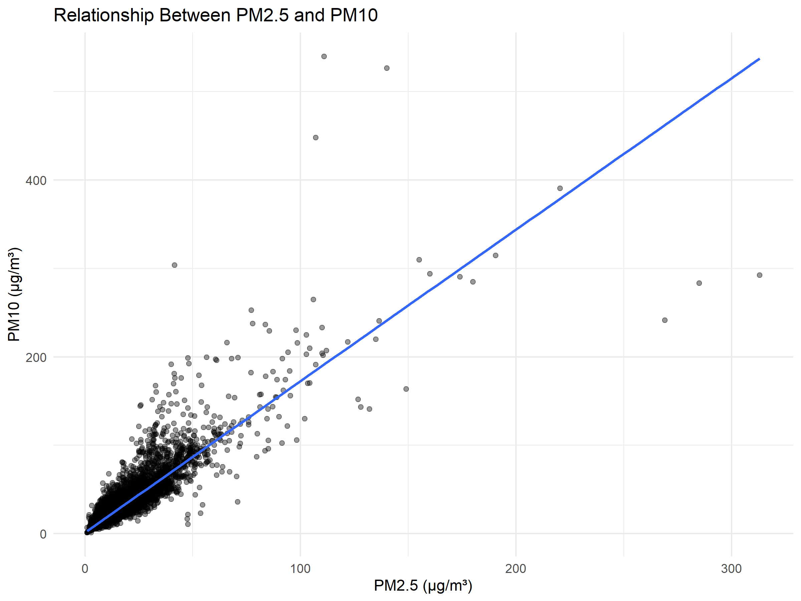
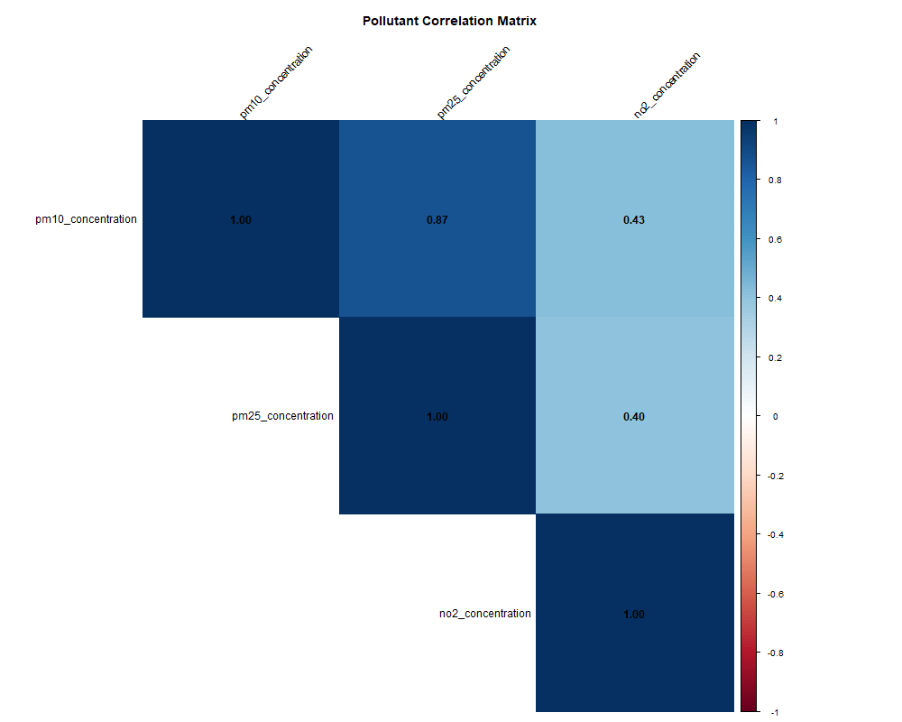
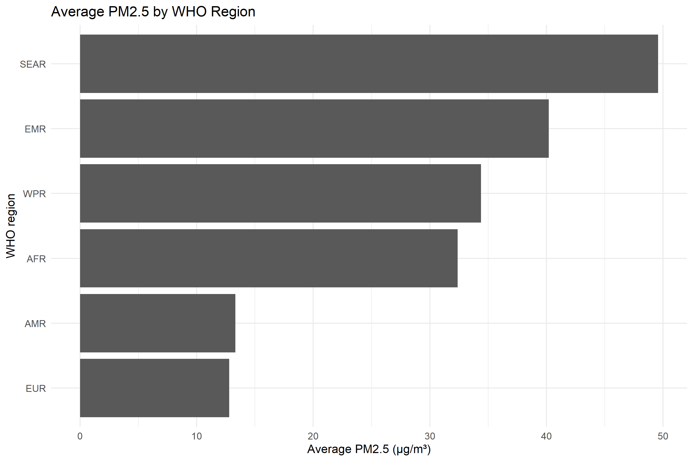

This project analyzes the WHO Ambient Air Quality Database using R. Data cleaning, descriptive statistics, comparisons, correlation analysis and visualization are used to study reported PM2.5, PM10 and NO2 concentrations.
Records after cleaning: 24319
Countries represented: 104
Year range: 2010 to 2025







The analysis summarizes reported air pollution measurements and explores differences across locations and years. Results should be interpreted in light of differences in data coverage, monitoring stations and observation counts.
Measurements vary by year, location and monitoring coverage. Averages from different locations or periods are not necessarily directly comparable. Correlation does not establish causation.
World Health Organization (WHO), Ambient Air Quality Database, Version 2026.